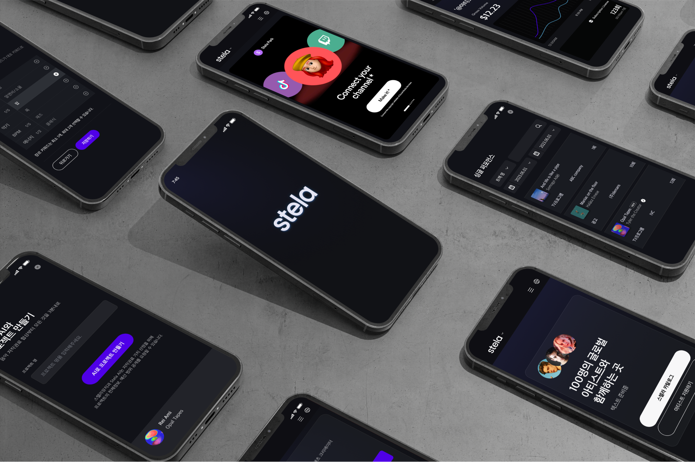
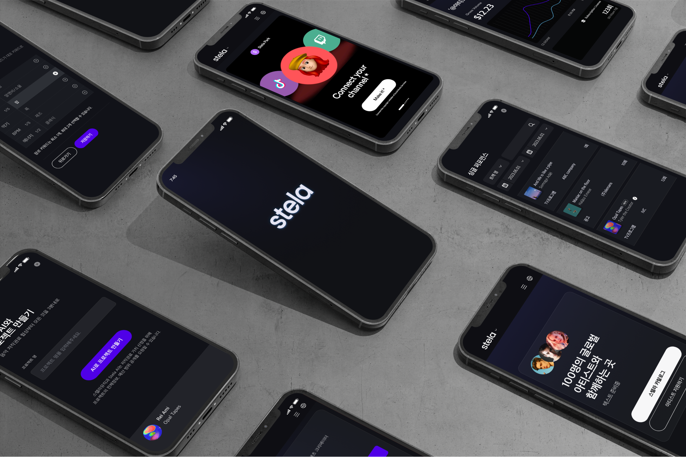

Stela Music
스텔라 뮤직은 음원 저작권 대리 중개와 국내 DSP(Distribution Service Platform)에 음악을 유통하는 웹 플랫폼으로, 이 프로젝트의 핵심 목표는 스텔라 뮤직, 스텔라 아티스트, 스텔라 관리자 세 가지 사이트를 계약 기간 내에 완성하는 것입니다.
저의 역할은 개념 정리, UX 디자인, UI 디자인으로, 특히 싱글 라이센스 구매 과정을 사용자 친화적으로 개선하는 데 주력했습니다. 음악 저작권법에 따라 동일한 종류의 음원도 20여 가지 이상의 가격으로 변동하며, 이러한 복잡한 구매 경험을 간소화하기 위해 유저 테스트를 통해 사용성을 개선했습니다. 또한, 이 과정에서 고객사와 개발팀 간의 의견을 조율하여 최적의 개발 프로세스를 구축하고 프로젝트를 리딩하는 경험을 얻었습니다.
Pain point in process
크리에이터가 뮤지션으로부터 음원을 일회적으로 구입(싱글라이센스 구입)하기 위해서는 “콘텐츠 타입, 송출플랫폼, 이용기준, 이용범위, 이용기간” 5가지의 기준에 따른 세부 내용을 선택해야합니다.
다음은 "싱글 라이센스" 구입 유저 경험 디자인 과정 속에서 문제점을 찾고 그 것을 해결하는 방법을 찾았던 과정을
"자료 평가 > 와이어프레임 > 유저 테스트 > 와이어프레임 수정 > 최종 디자인 및 개발팀 협의" 순서로 정리한 내용입니다.
-
Step
Research Analysis
크리에이터가 뮤지션으로부터 음원을 일회적으로 구입(싱글라이센스 구입)하기 위해서는 “콘텐츠 타입, 송출플랫폼, 이용기준, 이용범위, 이용기간” 5가지의 기준에 따른 세부 내용을 선택해야합니다.
이 5가지 기준의 결과에 따라서 동일한 음원의 라이센스 비용이 20여가지로 변경될 수 있습니다. 따라서, 5가지의 기준을 차례로 유저가 선택하는 과정을 유저 친화적으로 설계하는 것이 중요했습니다. -
Step
Wireframe
첫번째 와이어 프레임은 음원의 “콘텐츠 타입, 송출플랫폼, 이용기준, 이용범위, 이용기간” 5가지의 기준을 한 화면에 선택하여 가격을 바로 확인 할 수 있도록 설계하였습니다.
-
Step
User Test
유저 테스트 결과 유저 중 일부는 "콘텐츠 타입", "이용 기준" 등 5가지 기준의 맥락을 이해하기 힘들어 하였고, 구체적인 설명을 요청하였습니다.
-
Step
Revised Wireframe
수정된 와이어 프레임은 “콘텐츠 타입, 송출플랫폼, 이용기준, 이용범위, 이용기간”을 각각의 페이지로 단계별로 선택할 수 있도록 수정하였습니다.
또한 이때 페이지의 메인 텍스트와 서브 텍스트로 각각의 기준을 설명하여 유저의 이해를 높였습니다.
마지막으로 해당 페이지를 단계별로 나누어, 유저가 구매 과정 중에 이탈할 경우에도 선택 완료된 이전 페이지를 저장할 수 있도록 하였고, 이를 추적하여 개선사항을 점검하기로 하였습니다.
User FLow
수정된 와이어프레임은 유저 친화적으로 장점이 있었지만, 지나치게 페이지가 많아져서 개발 시간을 지연시키는 문제점을 유발하였습니다.
개발팀과 논의 끝에, 엑셀 파일로 정리되어 있는 경우의 수를 유저 흐름도로 다시 정리하고 철저하게 점검한 후 개발에 착수하기로 협의하였습니다.
Final Screen
다음은 완성된 디자인의 일부 스크린입니다.
-
콘텐츠 타입
-
송출 플랫폼
-
에피소드 수
-
이용기준(예산 범위)
Stela UI Design
음악과 컨텐츠 크리에이터를 연결해주는 플랫폼인 “Stela Music”은, 트렌드에 민감한 메인 타겟층의 취향을 고려하여
다크모드에 브랜드 컬러의 베리에이션으로 간결하고 힙한 톤으로 디자인하였습니다.

 
